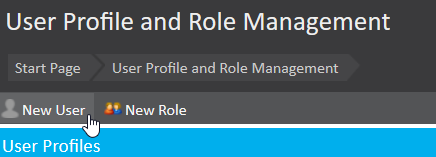
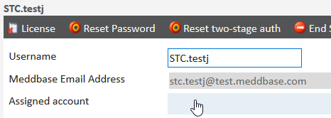
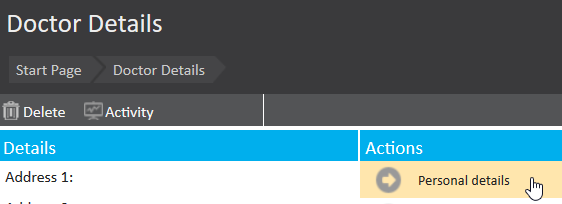

Meddbase is designed to handle a wide range of referral types, making it a versatile solution for managing patient care pathways. Whether your organisation needs to receive external referrals, send referrals to external providers, or manage internal referrals within your practice, Meddbase accommodates these processes seamlessly.
External referrals can be sent to other organisations, ensuring patients receive the necessary care outside your practice. Similarly, internal referrals enable efficient coordination among consultants and clinicians within your organisation. By advertising referral types and managing consultant availability, Meddbase ensures referrals are handled accurately and efficiently.
This article will guide you through how to configure Medical Persons to receive referrals in Meddbase.
In order to be referred to, each consultant needs to have a user profile in Meddbase and an assigned account.
Step 1: Creating a user profile

Step 2: Assigning an account

Step 3: Completing the user profile
Step 4: Assigning a license
If your consultants will be logging in to Meddbase to receive referrals, you will need to assign them a license.
Step 5: Adding additional details (optional)
Next, you may want to add some information to help other Meddbase users understand who they are referring to.

Scroll down to ‘Public Profile’, then enter the consultant’s full title and any additional details. This information will be displayed to the referrer to assist in understanding the type of consultant they are referring to. If they have a twitter, LinkedIn profile or website, you can enter this information as well if you wish.
Save the details. The account is now setup and ready to receive referrals.